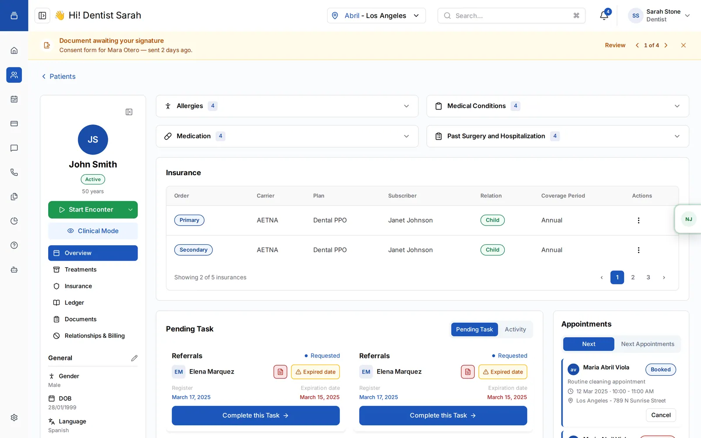
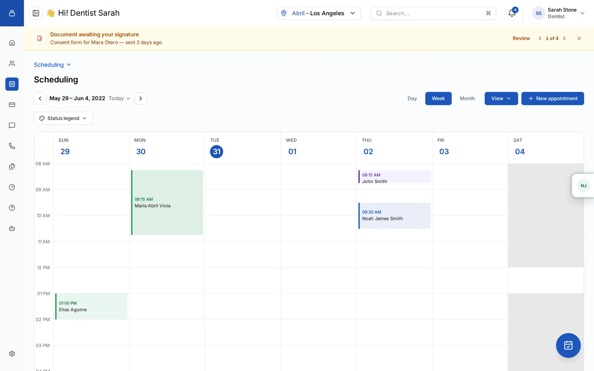
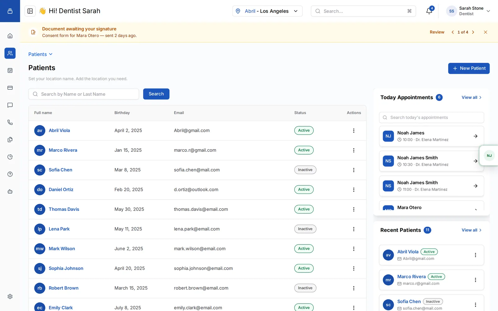
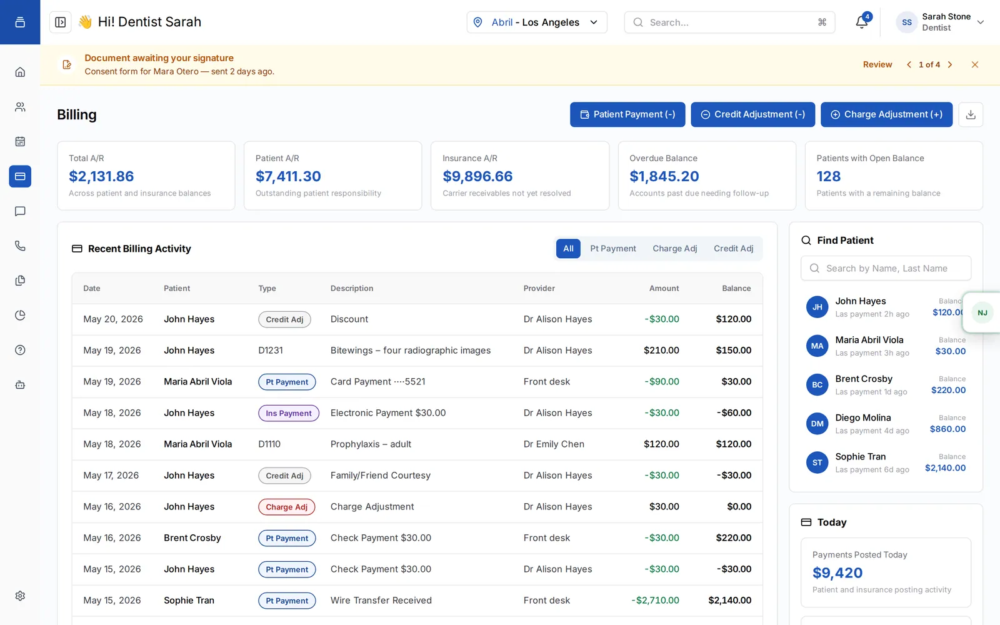
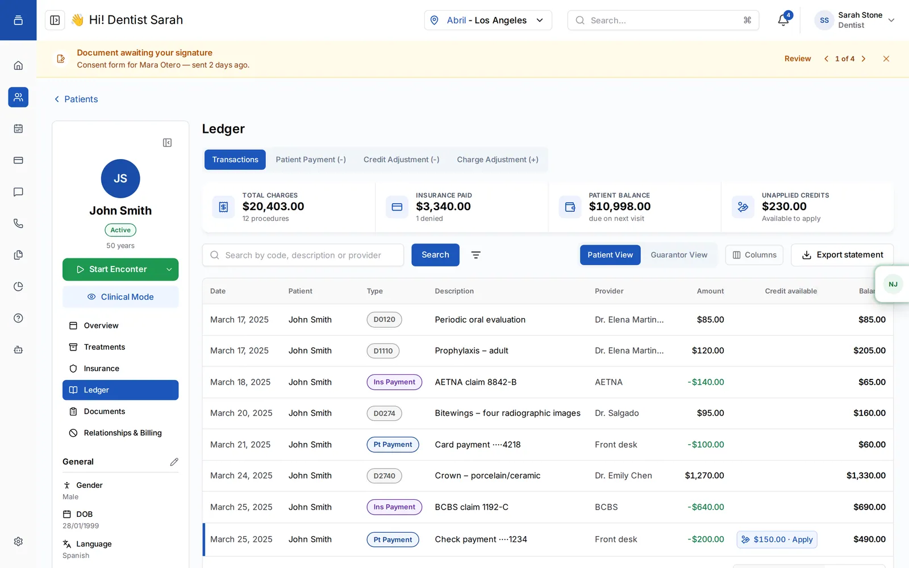
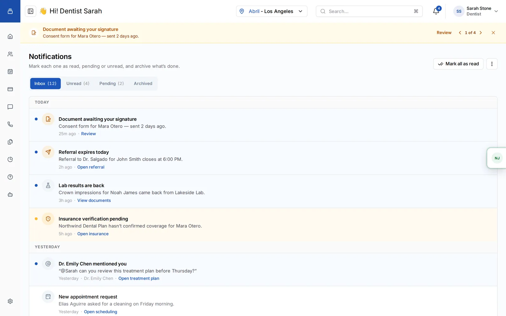
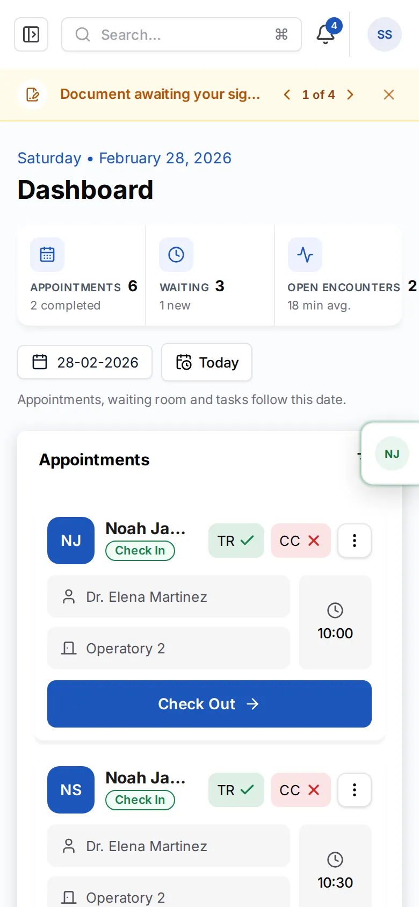

Confidentally
A dental practice platform, redesigned from the front desk to the dental chair and rebuilt as a prototype the whole team can click through.Una plataforma para clínicas dentales, rediseñada de la recepción al sillón y reconstruida como un prototipo que todo el equipo puede recorrer.
This case study is under NDAEste caso está bajo NDA
The client and product details are confidential. Enter the password to read the process, the decisions and every screen.El cliente y los detalles del producto son confidenciales. Ingresá la contraseña para ver el proceso, las decisiones y todas las pantallas.
No password? Write to¿No tenés la contraseña? Escribime a juliangerardi266@gmail.com and I’ll send it to you.y te la paso.
One product for everyone who works in a dental clinic.Un producto para todos los que trabajan en una clínica dental.
Confidentally is a practice-management platform for dental clinics. The front desk checks patients in and manages the waiting room, dentists chart teeth and plan treatments, and the billing team closes the day with insurance claims and patient balances.Confidentally es una plataforma de gestión para clínicas dentales. La recepción registra la llegada de pacientes y maneja la sala de espera, los odontólogos cargan el odontograma y planifican tratamientos, y facturación cierra el día con obras sociales y saldos de pacientes.
I led the redesign of the interface. Instead of stopping at Figma, I rebuilt the product as a working prototype with mock data, so every flow could be tried in a browser, and documented every piece in Confidentally UI, a design system that reads the same code.Lideré el rediseño de la interfaz. En vez de quedarme en Figma, reconstruí el producto como un prototipo funcional con datos de prueba, para que cada flujo se pueda probar en el navegador, y documenté cada pieza en Confidentally UI, un design system que lee el mismo código.
Everything shown here is my redesign running on invented data. No real patient, clinic or client information appears in this case study.Todo lo que se ve acá es mi rediseño funcionando con datos inventados. No aparece información real de pacientes, clínicas ni del cliente.
A product that grew module by module.Un producto que creció módulo por módulo.
Each area had been designed on its own. Screens didn’t share a grid, appointment cards were rewritten by hand in several places, and Spanish strings slipped into English modals. For people who keep the app open all day, those small breaks add up to slower work and more errors.Cada área se había diseñado por separado. Las pantallas no compartían grilla, las tarjetas de turnos estaban reescritas a mano en varios lugares y se colaban textos en español en modales en inglés. Para quien tiene la app abierta todo el día, esos cortes chicos suman trabajo más lento y más errores.
One coherent system from the front desk to the dental chair, without slowing down anyone who already knows the product.Un sistema coherente de la recepción al sillón, sin frenar a nadie que ya conoce el producto.
Audit first, then design, then build.Primero auditar, después diseñar, después construir.
- 01
Inventory the live productRelevar el producto en producción
Every route of the production app mapped at 1440×900 and rated by complexity, from the login to the seven Clinical Mode modules.Cada ruta de la app en producción relevada a 1440×900 y clasificada por complejidad, del login a los siete módulos de Clinical Mode.
- 02
Audit the Figma file, module by moduleAuditar el Figma, módulo por módulo
Dashboard, Patients, Scheduling, Treatments, Documents and Relationships: 44 anomalies logged and numbered so the team could cite them without ambiguity.Dashboard, Patients, Scheduling, Treatments, Documents y Relationships: 44 anomalías registradas y numeradas para que el equipo las pueda citar sin ambigüedad.
- 03
Agree on conventionsAcordar convenciones
Keep the Figma proportions with an 11px floor for text in cards, open two- and three-column grids at 1024px, fix what is visual and document the rest.Mantener las proporciones del Figma con un mínimo de 11px para el texto en tarjetas, abrir las grillas de dos y tres columnas a 1024px, corregir lo visual y documentar el resto.
- 04
Rebuild it as a working prototypeReconstruirlo como prototipo funcional
React, TypeScript and Tailwind on mock data, built with Claude as a pair. Real flows, such as booking an appointment with a treatment plan, can be tried in a browser.React, TypeScript y Tailwind con datos de prueba, hecho con Claude como compañero. Los flujos reales, como dar un turno con plan de tratamiento, se pueden probar en el navegador.
- 05
Turn the result into a systemConvertir el resultado en un sistema
Every button, card and screen went into Confidentally UI, with the reasons behind each decision and scripts that flag when the code drifts.Cada botón, tarjeta y pantalla pasó a Confidentally UI, con el porqué de cada decisión y scripts que avisan cuando el código se desvía.
A few of the 44 anomaliesAlgunas de las 44 anomalías
Designed around the moment each person is in.Diseñado alrededor del momento de cada persona.
Dashboard: the day at a glanceDashboard: el día de un vistazo
The front desk lives here. Appointments, the waiting room and the operatories sit side by side, and one date control drives appointments, the waiting room and tasks.La recepción vive acá. Turnos, sala de espera y consultorios van uno al lado del otro, y un solo control de fecha maneja turnos, sala de espera y tareas.
- Stat stripFranja de métricas with appointments, people waiting and open encounters.con turnos, gente esperando y consultas abiertas.
- Signature bannerBanner de firmas with a 1-of-4 pager instead of a stack of alerts.con un paginador de 1 de 4 en vez de una pila de alertas.

Patient recordFicha del paciente
The left panel keeps identity and the two actions that matter most, Start Encounter and Clinical Mode, in reach while tabs change on the right.El panel izquierdo mantiene la identidad y las dos acciones más importantes, Start Encounter y Clinical Mode, siempre a mano mientras cambian las pestañas de la derecha.
- Clinical accordionsAcordeones clínicos with counters, so allergies and medication show before they’re opened.con contadores, para ver alergias y medicación antes de abrirlos.
- Pending tasksTareas pendientes such as referrals flag expired dates in context.como derivaciones marcan las fechas vencidas en contexto.

Clinical ModeClinical Mode
A takeover without the app shell, because the dentist needs the whole screen. The odontogram sits at the center, with ten exams one tap away and the treatment plan to the left.Una vista a pantalla completa sin el marco de la app, porque el odontólogo necesita toda la pantalla. El odontograma va al centro, con diez exámenes a un toque y el plan de tratamiento a la izquierda.
- Last conditionÚltima condición callout on the chart, so the latest finding is never buried.destacada sobre el odontograma, para que el último hallazgo nunca quede escondido.

SchedulingAgenda
Day, week and month share one legend with seven appointment states. A new appointment is a two-step wizard, patient and time first and treatment plan second, with free slots in a side panel.Día, semana y mes comparten una leyenda con siete estados de turno. Un turno nuevo es un asistente de dos pasos, primero paciente y horario y después plan de tratamiento, con los horarios libres en un panel lateral.
- Patient in session:Paciente en consulta: a tab on the right edge of every screen lists today’s patients who haven’t finished.una pestaña en el borde derecho de cada pantalla lista los pacientes de hoy que todavía no terminaron.


Billing and ledgerFacturación y cuenta corriente
Receivables split between what patients owe and what insurance carriers owe, with overdue balances apart. Payments and adjustments open as panels over the ledger.Las cuentas por cobrar se separan entre lo que deben los pacientes y lo que deben las aseguradoras, con los saldos vencidos aparte. Pagos y ajustes se abren como paneles sobre la cuenta corriente.


Notifications with a “pending” stateNotificaciones con estado “pendiente”
The inbox follows Notion’s logic: inbox, unread and archived, grouped by date, with bulk actions. I added pending because here notifications are tasks: sign a consent, confirm an appointment, verify an insurance plan.La bandeja sigue la lógica de Notion: entrada, no leídas y archivadas, agrupadas por fecha, con acciones en lote. Sumé pendiente porque acá las notificaciones son tareas: firmar un consentimiento, confirmar un turno, verificar una cobertura.

The same product in a dentist’s pocket.El mismo producto en el bolsillo del odontólogo.
Every screen is responsive. On a phone the patient menu turns into horizontal tabs and panels stack in the order a clinician reads them.Todas las pantallas son responsive. En el celular el menú del paciente pasa a pestañas horizontales y los paneles se apilan en el orden en que los lee un profesional.



Confidentally UI keeps the redesign from drifting.Confidentally UI evita que el rediseño se desvíe.
The design system reads the app’s own components: change a token in code and the docs change with it. It has its own case study.El design system lee los componentes de la propia app: si cambia un token en el código, la documentación cambia con él. Tiene su propio caso.
A product the team can open, click and build from.Un producto que el equipo puede abrir, recorrer y usar de base.
Developers get components that already exist in code, product gets a prototype to test with clinics, and design gets one place where every decision is written down.Desarrollo recibe componentes que ya existen en código, producto recibe un prototipo para probar con clínicas y diseño tiene un solo lugar donde cada decisión queda escrita.